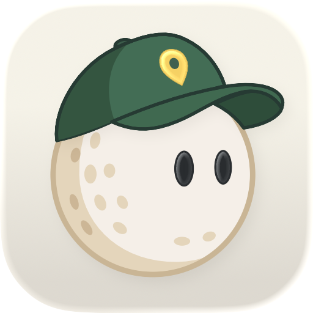

Albie
Your little golf companion. A place for every shot.
Install AlbieUpdating build 23 or later? Install over the existing app to keep your profile, active round and history.
Build 22 or earlier? Saved app state uses an incompatible pre-production format. Preserve the old installation if you need its test data; reinstalling removes local data.
Version 1.0 · Build 24 · iOS / iPadOS 26.2 or later
Ready for your first tee?
- Open this page in Safari on your registered iPhone or iPad.
- Tap Install Albie and confirm the installation.
- Return to your Home Screen and open Albie.
Build 24 improves onboarding keyboard dismissal and map framing across course, hole and round views. Update build 23 in place to retain your data. Builds 22 and earlier use an incompatible pre-production data format; preserve the old installation if its test data is needed. No app data was reset during this release.
Installation is limited to registered devices. If it doesn’t finish, check the required iOS version and ask the person who shared this page to check your device registration.
This build’s provisioning profile expires August 20, 2027.